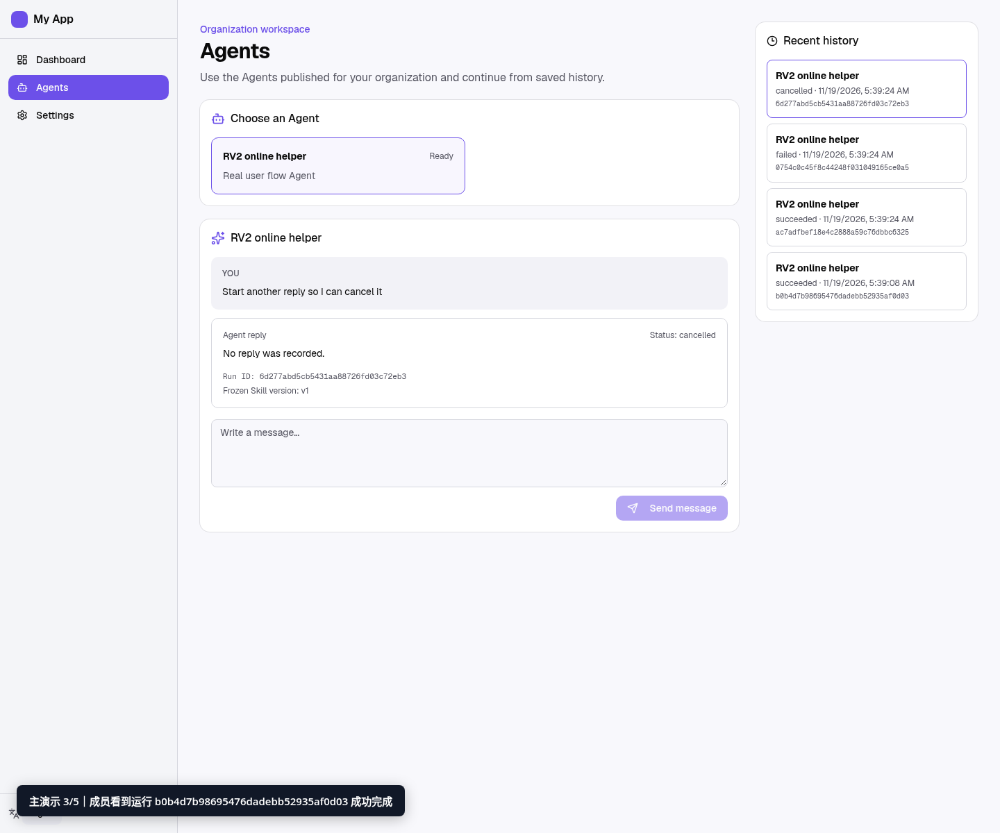
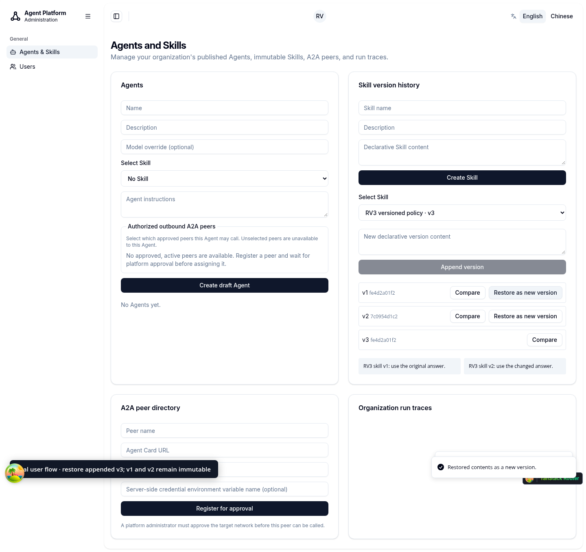
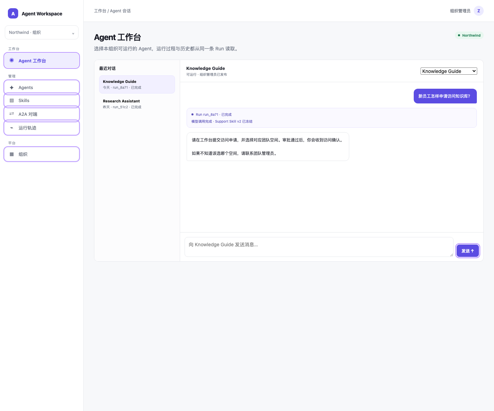
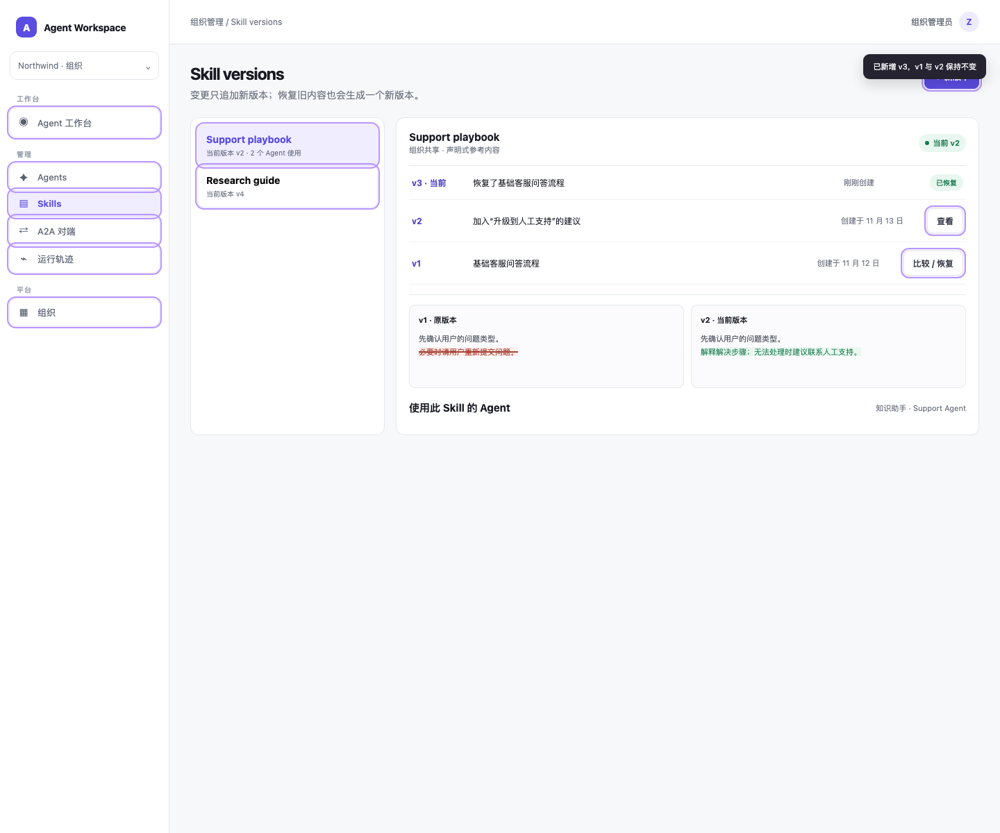

第 1 项 · 数据固定属于创建组织
术语：组织归属 = 数据创建时记录的组织，之后不随成员调动改变。
确认 §2 的业务数据组织范围决定（组织与管理员本身由上游 PRD 验收）；证据为 `rv-1` 两组织负控、迁移前后数据对账和独立 verifier 结论。（PRD §9.2 Human-Confirmed 第 1 条）
证据：rv-1-org-isolation-pg.txt 与 rv-1-org-isolation-mysql.txt 的真实 Cookie、正式调组织接口和新请求读取；rv-1-negative-control-pg.txt 的临时无过滤变体实际泄露并变红。
第 2 项 · 单一 Run 与失败闭合
术语：单一 Run 事实源 = 页面、历史、A2A 与诊断都读同一 Run/Event 存储。
确认 §2 的稳定 Agent/单一 Run 事实源与失败闭合决定；证据为 `rv-2` 真实页面、历史和轨迹呈递。（PRD §9.2 Human-Confirmed 第 2 条）

证据：rv-2-real-user-flow.txt（2 tests passed）、rv-2-incremental-reply.txt 与 rv-2-streaming-reply.png（运行未结束时回复已在增长）、rv-2-fast-terminal-states.txt（快速成功/失败页面状态与新 API 读取一致）、rv-2-negative-terminal-probe.txt（旧轮询变体下 API 为 succeeded、页面仍 queued）、单独录制的 rv-2-demo-multi-organization-agent.mp4 和 rv-2-agent-run.png；rv-7-a2a-bidirectional.txt 的停用、无模型和未审核工具负控。
本地录像：open "tasks/evidence/P1-FEAT-20260928-115856-multi-organization-online-agent-base/rv-2-demo-multi-organization-agent.mp4"；字幕原文见 rv-2-caption-trace.txt。
第 3 项 · Skill 线性版本与恢复快照
术语：冻结版本 = Run 创建时保存当时 Skill 版本，后续更新不回写旧 Run。
确认 §2 的 Skill 线性版本与恢复决定；证据为 `rv-3` 差异、版本链和两个 Run 快照呈递。（PRD §9.2 Human-Confirmed 第 3 条）

证据：rv-3-real-user-flow.txt（2 tests passed）；旧 Run 为 v1，新 Run 为 v3；rv-7-a2a-bidirectional.txt 的幂等重试不增加重复版本。
第 4 项 · 双向 A2A 与受控对端
术语：SSRF = 服务端被诱导访问内网或不该访问的地址；此处要求在网络调用前拒绝。
确认 §2 的 A2A 双向互通与受控对端决定；证据为 `rv-7` 双向协议、跨组织和受限地址负控及 Run/Task 对账。（PRD §9.2 Human-Confirmed 第 4 条）
证据：官方 a2a-sdk[all]==1.0.0 的入站发送/重试/查询/列表/订阅/取消；出站父 Run a72a4c0565104c86b39513076e18fabc 关联远端 Task 7c401cfe-cb27-401d-93be-68f26c33bd46。DNS 与零 HTTP 负控见 tests/backend/test_a2a_outbound_policy.py。
第 5 项 · 真实界面与披露差异
术语：real user flow = 从生产页面、真实登录和 API 到达状态，不是组件预览。
审阅 §9.1 的真实前台与管理后台图、原型对照及披露差异；证据为最终可打开的人审呈递页或 PR 证据评论。（PRD §9.2 Human-Confirmed 第 5 条）


披露：生产沿用现有 Next/TanStack 布局；模型与公网外部 Agent 未验证；GitHub 同步抓取两次失败，最终以本地 upstream 完成真实 clone/compare；未执行公网部署。
合并验收记录（可复制）
PR #62 合并即接受 §9.2 五项决定；归档 PRD 已更新。此页只呈递已记录的验收，不要求回复。